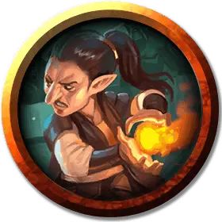

Палубный пират волшебник
Pirate Deck Wizard
Средний Гуманоид (Любая раса), любое мировоззрение

Класс Доспеха 12 (15 с доспехом мага)
Хиты 32 (5к8 + 10)
Скорость 30 футов
| мод | спас | ||
|---|---|---|---|
| СИЛ | 10 | +0 | +0 |
| ЛОВ | 14 | +2 | +2 |
| ТЕЛ | 14 | +2 | +2 |
| мод | спас | ||
|---|---|---|---|
| ИНТ | 16 | +3 | +3 |
| МДР | 13 | +1 | +1 |
| ХАР | 11 | +0 | +0 |
Навыки Восприятие +3, Магия +5
Чувства пассивное Восприятие 13
Языки любой один язык (обычно Общий)
Опасность 1 (200 опыта)
Бонус мастерства +2
Особенности
Морская качка. Волшебник с преимуществом совершает проверки характеристик и спасброски, чтобы не быть сбитым с ног.
Использование заклинаний. Волшебник является заклинателем 4-го уровня. Его базовой характеристикой является Интеллект (Сл спасброска от заклинаний 13, +5 к атакам заклинаниями). У него подготовлены следующие заклинания волшебника:
• Заговоры (Неограниченно): дружба [friends], волшебная рука [mage hand], фокусы [prestidigitation], луч холода [ray of frost];
• 1 уровень (4 ячейки): маскировка [disguise self], туманное облако [fog cloud], доспехи мага [mage armor], ведьмин снаряд [witch bolt];
• 2 уровень (3 ячейки): порыв ветра [gust of wind], Мельфова кислотная стрела [Melf's acid arrow], туманный шаг [misty step].
Действия
Боевой посох. . Рукопашная атака оружием: +2 к попаданию, досягаемость 5 футов, одна цель. Попадание: 3 (1к6) дробящего урона.
Описание
Эти покрытые солью практикующие магию пираты одновременно образованны и суеверны. Команда пиратских кораблей обычно обходят своих палубных волшебников стороной, поскольку они волшебным образом перемещаются с места на место и обрушивают свою соленую магию на нападающих. Корабль "Морской призрак" в "Зловещей тайне Солтмарша" является домом для волшебника пиратской колоды по имени Панкета.